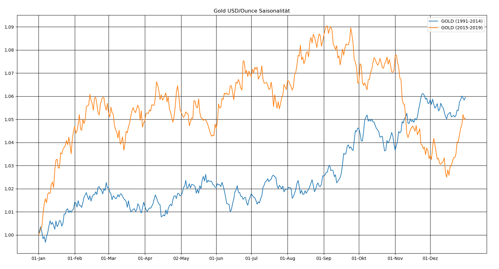

Wie man im Bild erkennen kann, ist Gold um die Jahreswende und am Anfang des Jahres üblicherweise stark. Dieses Verhalten, welches schon im Betrachtungszeitraum von 1991 bis 2014 beobachtet werden konnte, war auch in den letzten Jahren 2015 bis 2019 ausgeprägt.
